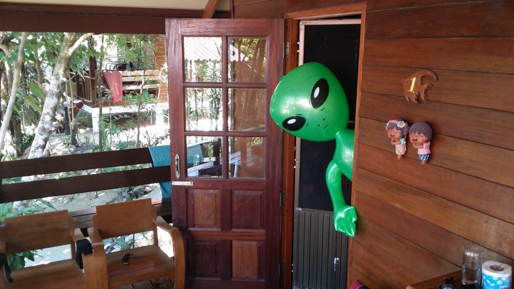

"Welcome home sweetie!"
"Oh no, not again" you go.
"Told you one day botox might hit back on ya!"
Or would you just call 911? Or the local funny farm?
Or grab your AR-15? Or use it as THE
excuse to finally run off with the neighbour?
Anyway, here's some ufo sighting data collected between January 2010 and August 2014.
You can use multiple search filters to narrow down.
For instance, searching on city "El Cajon" will show all sightings for El Cajon.
If you want to narrow down on shape "triangle" , simply enter and hit Search again.
Use the "Reset" button to clear all filters and start another search. Enjoy!